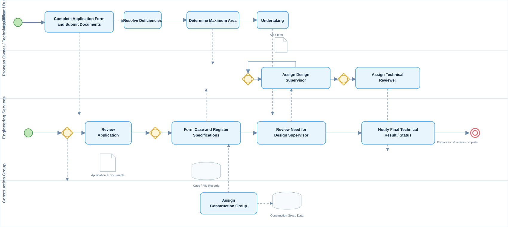

01
Business & Process Analyst
My role: conducting interviews, documenting the current process, identifying pain points, analyzing requirements, modeling BPMN, preparing the process charter and documenting the improved process.
CASE STUDY 01 · BUILDING ENGINEERING ORGANIZATION
Process analysis, redesign, BPMN modeling and implementation support for a Building Engineering Organization.
From current-state discovery and stakeholder interviews to improved process design and delivery to the development team.
PROJECT CONTEXT
This project was carried out for a Building Engineering Organization where our team, as an external contractor, analyzed and improved business processes across the organization. The selected case focuses on the construction file formation process.
The work included stakeholder interviews, current-state analysis, identification of bottlenecks and challenges, improvement design, BPMN modeling, process documentation and collaboration with the development team for implementation.
TEAM & STAKEHOLDERS
My role: conducting interviews, documenting the current process, identifying pain points, analyzing requirements, modeling BPMN, preparing the process charter and documenting the improved process.
Coordinated the project, communication, meetings, follow-up and delivery of project outputs.
Supported documentation, information gathering and analysis activities.
MY ROLE
Held structured discussions with process owners, IT representatives and users to understand how the process was actually performed.
Documented the current workflow, roles, inputs, outputs, dependencies and pain points.
Reviewed bottlenecks and proposed a more structured process aligned with the intended system implementation.
Modeled the process using BPMN 2.0 and prepared process documentation for review and approval.
Shared approved process documentation and requirements with the development team as implementation inputs.
SELECTED PROCESS
The process begins with a construction file request and involves review, case formation, assignment and preparation steps before the file moves forward. The analysis focused on clarifying responsibilities, reducing unnecessary handoffs and making the process more suitable for system implementation.
CHALLENGE ANALYSIS
Information and responsibilities moved between different roles and units, making ownership harder to follow.
Several coordination steps depended on manual communication and follow-up.
The selected process was connected to other organizational processes, so changes had to be considered in context.
The process needed clear documentation and role definitions before being translated into system behavior.
BPMN 2.0 · ENGLISH VERSION
This English diagram is a portfolio adaptation of the original Persian BPMN model supplied from the project. The main process stages, roles, decisions and handoffs have been translated for an international audience.

PROJECT ARTIFACT · ORIGINAL PERSIAN MODEL
The original Persian BPMN diagram from the project is preserved below. Keeping the original artifact alongside the English portfolio version makes the case study transparent while allowing international reviewers to understand the process.
Click the original Persian diagram to open the full-resolution project artifact.
DELIVERABLES
OUTCOME
The approved improved process and supporting documentation were provided to the development team as implementation inputs. During implementation, our team also supported follow-up, clarification and analysis of changes requested by users.